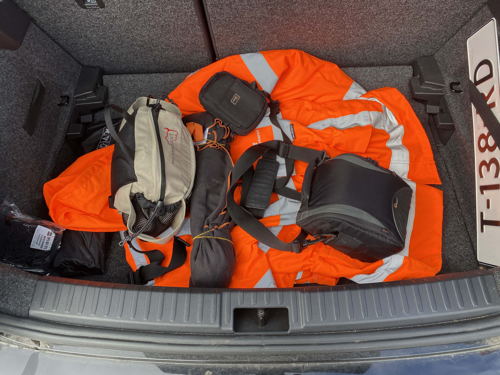
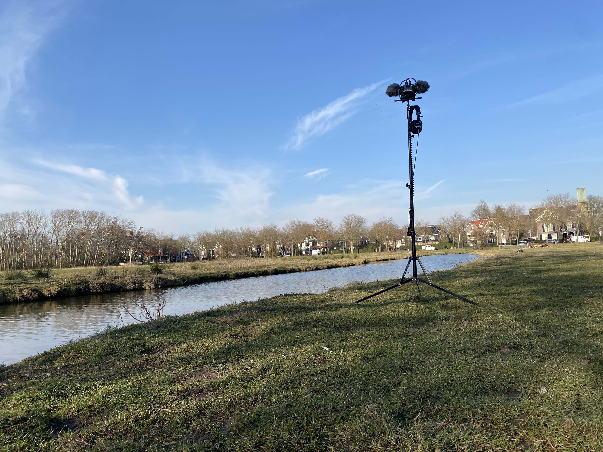
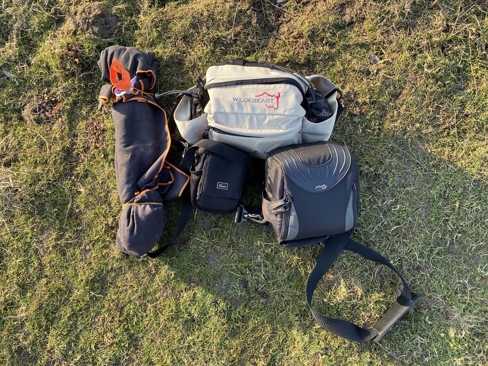

Welcome to my diary where I share my early adventures in field recording. I’m still learning and only have a few sessions under my belt, but I’m passionate about capturing nature’s sounds—even if they aren’t perfect.
Field Recording at South Dunes in Katwijk aan Zee: The Aalscholver Encounter
Posted on March 16, 2025
Today, I eagerly ventured out to the South Dunes in Katwijk aan Zee, driven by my deep love for nature’s subtle symphony. If I ever had to choose between a lively party and the gentle magic of the natural world, my heart always leans toward nature.
Inspired by the BBC documentary "Birdsong", I set off with a hopeful, curious spirit to record some birds. The one that truly captured my attention was the so-called aalscholver. Seeing an entire family quietly nesting in the trees filled me with wonder and joy.
I soon learned that finding the perfect recording spot is an art. I recorded from two different distances – first from afar to absorb the overall ambience, then up close to capture their gentle calls. Although my presence briefly startled the birds, they gracefully returned, as if accepting my humble intrusion.
I left the dunes with a head brimming with questions and a heart bursting with joy. The playful wind and even a few unexpected gusts that challenged my setup made the experience all the more unforgettable. It’s moments like these that inspire me to keep exploring and recording.
Reflecting on today’s adventure, I feel both humbled and elated. Every recording session brings me closer to nature’s heart, and every challenge becomes a cherished lesson on my joyful journey.
Field Recording at Katwijkse Uitwatering: Where Sweet Water Meets Salt and Wind
Posted on March 14, 2025
Today, I set out to capture the unique soundscape of Katwijkse Uitwatering, where the fresh flow of the Old Rhine meets the salty sea. With a warm curiosity and a humble desire to learn, I used my Zoom F3 and Line Audio CM4 microphones in an ORTF configuration to record every subtle whisper of nature.
Although the day was bright and inviting, the chilly wind and biting cold made every step a small challenge. I carefully aimed my microphones at the gentle murmur of the waves, even as my tripod struggled a bit on the soft, almost quicksand-like ground.
Unsure whether to capture the loud crash of waves or the soft, continuous murmur of water meeting sand, I experimented with my setup and learned to appreciate every nuance. My Movo windscreens did their best, and the experience filled me with both excitement and valuable lessons.
As I reflect on the day, my heart feels full of gratitude. The gentle whispers of the sea and the challenges I faced remind me that every moment in nature is a precious, unedited gift.
Field Recording at Strand Wassenaarseslag: Capturing Waves and Foam
Posted on March 12, 2025
Today, I set off to Strand Wassenaarseslag with a heart brimming with curiosity and a spirit eager for adventure. The ocean greeted me with its rhythmic crash of waves and the soft, mesmerizing hiss of foam.
Although the strong tide and gusty winds made me initially anxious about my delicate setup, the calm and reflective atmosphere soon wrapped me in its soothing embrace. I felt both the thrill of the moment and a deep, warm connection to the sea.
I experimented with techniques to shield against the wind while listening to the pure melody of the ocean. Every ripple and burst of foam felt like a personal message from nature, and I cherished every note.


This session left me in awe of the ocean’s unpredictable beauty and reminded me that every imperfect moment is filled with its own magic. I’m excited to keep learning and sharing these treasures.
Field Recording at Landje van Bremmer: Practical Challenges & Clear Insights
Posted on March 6, 2025
My very first field recording session at Landje van Bremmer was an adventure full of unexpected challenges. I even had to hop a fence (and avoid a possible run-in with an upset farmer) just to reach the spot. It was nerve-wracking yet incredibly exciting.
The field was muddy and had a few curious sheep wandering around, which gave the day a charming, unexpected quality. One tip I learned the hard way: avoid wearing jeans in these conditions—they get soaked really fast!
Although I worried about the wind affecting my recordings, I managed to reduce some of the low-frequency noise in post-production with a high-pass filter. Setting up my familiar rig—a Zoom F3 with Line Audio CM4 microphones in ORTF on my Manfrotto 5001B Nano Stand, along with WS8 Rode windscreens—helped me focus on capturing every genuine moment.
The soundscape was vibrant, with geese honking, reeds rustling, and a blend of other natural sounds creating a lively tapestry. As a beginner, every little detail felt like a precious lesson.


Every challenge at Landje van Bremmer reminded me of the beauty in imperfection and the importance of listening closely to nature’s true voice. I am deeply grateful for the lessons learned on this unforgettable day.